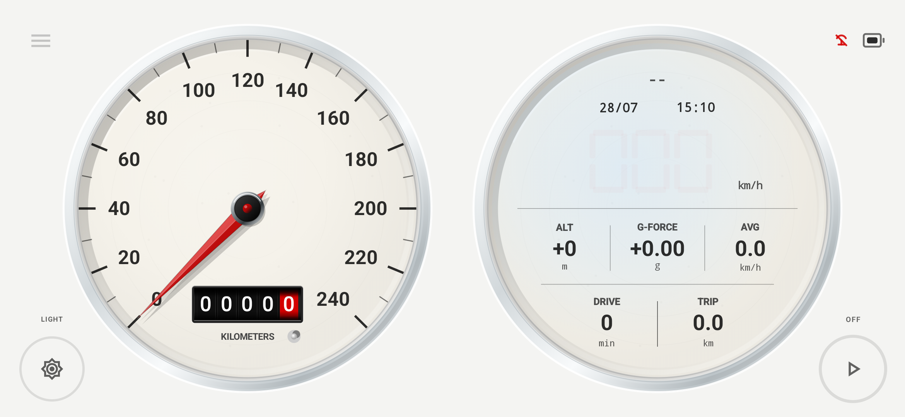
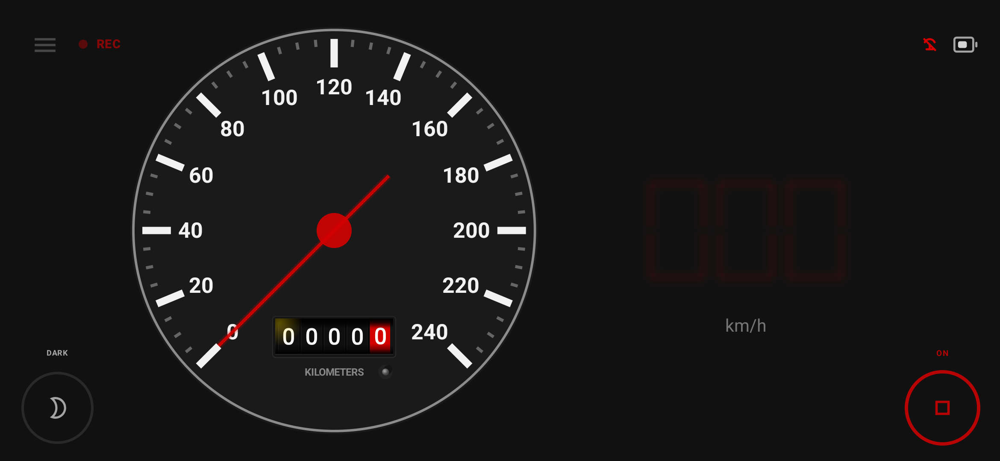
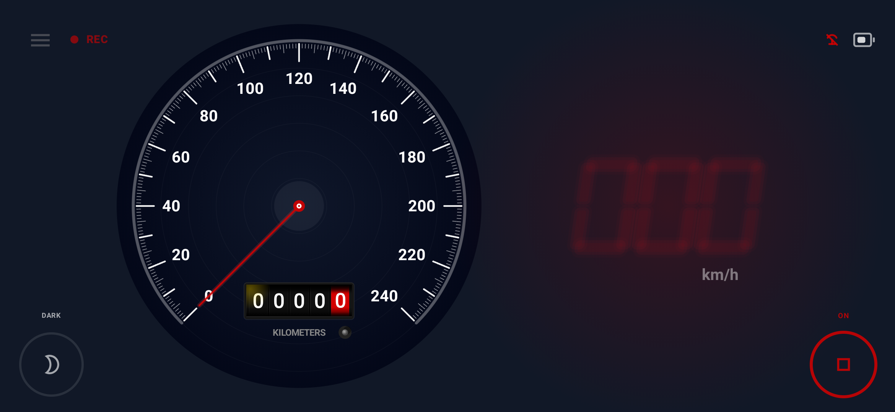
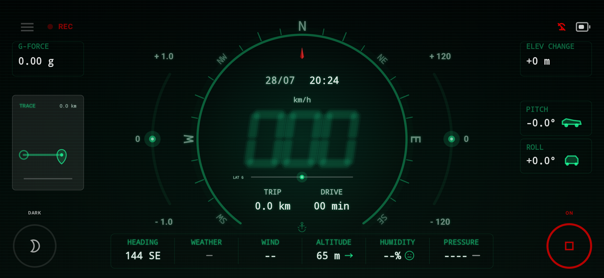
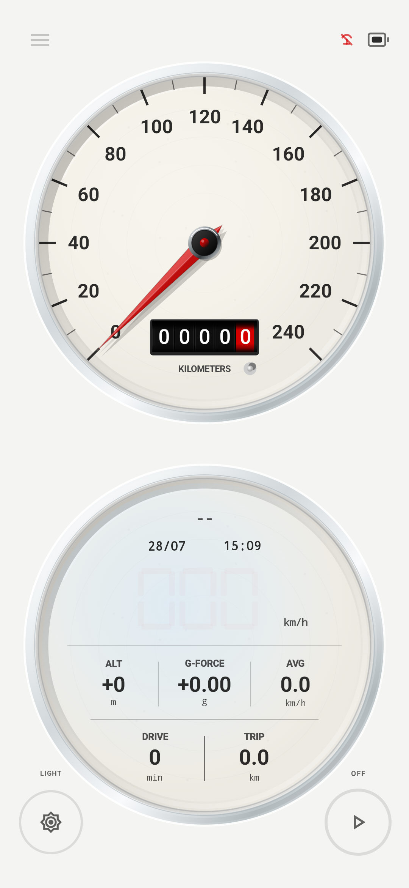

01 · Classic
Mechanical calm
机械的从容
Ceramic bezels, dimensional dials, and restrained typography inspired by timeless instruments.
陶瓷质感表圈、立体内凹表盘与克制排版，向经典机械仪表致意。
A driving companion for Android Android 驾驶伙伴
NeoGauge turns live driving data into a clear, expressive digital dashboard — with four distinctive themes and quiet journey memories that stay on your device.
NeoGauge 将实时驾驶数据变成清晰而有个性的数字仪表， 以四种独特主题陪你上路，并在设备本地安静地留住每段旅程。
No ads · No tracking · No data collection 无广告 · 无追踪 · 无数据收集

Four dashboards. One experience. 四种仪表，一种专注体验
Each theme has its own visual language, while speed readability and distraction-free operation remain constant.
每种主题都有独立的视觉语言，但清晰的速度显示与低干扰操作始终不变。
01 · Classic
Ceramic bezels, dimensional dials, and restrained typography inspired by timeless instruments.
陶瓷质感表圈、立体内凹表盘与克制排版，向经典机械仪表致意。

02 · Heritage
Familiar analog character and soft colors make everyday journeys feel a little more personal.
熟悉的模拟仪表气质与温和配色，让平常的路也多一点私人记忆。

03 · Colorful
Bright color, approachable forms, and a lively personality for relaxed everyday driving.
明快色彩、亲和造型与轻松个性，为日常驾驶带来一点好心情。

04 · Neon
Deep blacks, luminous segments, and high-impact information for a distinctly digital night drive.
深黑背景、发光数字与高辨识信息，营造鲜明的数字夜驾氛围。
Designed for the road 为真实道路而设计
NeoGauge is built around glanceable speed, stable motion, and layouts that remain balanced in portrait and landscape.
NeoGauge 围绕一眼可读的速度、稳定的动态响应，以及横竖屏都平衡的布局设计。
Large, clear speed 大而清晰的速度
High readability takes priority over visual effects. 可读性永远优先于视觉效果。
Day and night palettes 日夜配色
Contrast that suits changing light conditions. 为不同光线环境提供合适对比度。
Responsive GPS speed 灵敏而稳定的 GPS 速度
Tuned to feel smooth while responding quickly when you slow down. 兼顾平滑显示，并在减速时快速响应。
Phone and tablet ready 适配手机和平板
Flexible layouts for different screens and orientations. 灵活适应不同屏幕尺寸和使用方向。

12.4
kilometres remembered 公里旅程记忆
34 min
a quiet evening drive 一次安静的傍晚驾驶
62 km/h
average pace 平均速度
Local
stored only on your device 仅保存在你的设备上
More than a speedometer 不只是一块速度表
Journeys turn distance, time, and pace into a simple memory of where the day took you — without turning your life into a feed.
Journey 用距离、时间和速度留下简单的旅程记忆， 不打卡、不社交，也不把你的生活变成信息流。
Privacy first, by design 隐私优先，从设计开始
Location is used on your device to calculate speed and support journey records. NeoGauge has no analytics, advertising SDKs, user tracking, or location-history uploads.
位置信息仅在设备本地用于计算速度和支持旅程记录。 NeoGauge 不包含分析工具、广告 SDK、用户追踪，也不会上传位置历史。
Read the privacy policy → 阅读隐私政策 →Refined on real roads 在真实道路上打磨
NeoGauge is shaped by everyday use: changing daylight, imperfect GPS conditions, different screen sizes, and the simple need to read speed at a glance.
NeoGauge 在日常使用中持续打磨：变化的光线、不完美的 GPS 环境、 不同尺寸的屏幕，以及驾驶时一眼读清速度这个最基本的需求。
Ready for the next drive? 准备好下一段路了吗？
NeoGauge is a supplemental display. Mount your device securely and always follow local traffic laws. NeoGauge 仅作为辅助显示。请稳妥固定设备，并始终遵守当地交通法规。